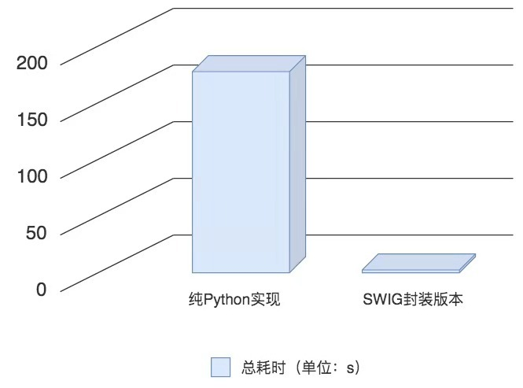

- 00 开篇词 从工程的角度深入理解Python.md.html
- 01 如何逐步突破，成为Python高手？.md.html
- 02 Jupyter Notebook为什么是现代Python的必学技术？.md.html
- 03 列表和元组，到底用哪一个？.md.html
- 04 字典、集合，你真的了解吗？.md.html
- 05 深入浅出字符串.md.html
- 06 Python “黑箱”：输入与输出.md.html
- 07 修炼基本功：条件与循环.md.html
- 08 异常处理：如何提高程序的稳定性？.md.html
- 09 不可或缺的自定义函数.md.html
- 10 简约不简单的匿名函数.md.html
- 11 面向对象（上）：从生活中的类比说起.md.html
- 12 面向对象（下）：如何实现一个搜索引擎？.md.html
- 13 搭建积木：Python 模块化.md.html
- 14 答疑（一）：列表和元组的内部实现是怎样的？.md.html
- 15 Python对象的比较、拷贝.md.html
- 16 值传递，引用传递or其他，Python里参数是如何传递的？.md.html
- 17 强大的装饰器.md.html
- 18 metaclass，是潘多拉魔盒还是阿拉丁神灯？.md.html
- 19 深入理解迭代器和生成器.md.html
- 20 揭秘 Python 协程.md.html
- 21 Python并发编程之Futures.md.html
- 22 并发编程之Asyncio.md.html
- 23 你真的懂Python GIL（全局解释器锁）吗？.md.html
- 24 带你解析 Python 垃圾回收机制.md.html
- 25 答疑（二）：GIL与多线程是什么关系呢？.md.html
- 26 活都来不及干了，还有空注意代码风格？！.md.html
- 27 学会合理分解代码，提高代码可读性.md.html
- 28 如何合理利用assert？.md.html
- 29 巧用上下文管理器和With语句精简代码.md.html
- 30 真的有必要写单元测试吗？.md.html
- 31 pdb & cProfile：调试和性能分析的法宝.md.html
- 32 答疑（三）：如何选择合适的异常处理方式？.md.html
- 33 带你初探量化世界.md.html
- 34 RESTful & Socket：搭建交易执行层核心.md.html
- 35 RESTful & Socket：行情数据对接和抓取.md.html
- 36 Pandas & Numpy：策略与回测系统.md.html
- 37 Kafka & ZMQ：自动化交易流水线.md.html
- 38 MySQL：日志和数据存储系统.md.html
- 39 Django：搭建监控平台.md.html
- 40 总结：Python中的数据结构与算法全景.md.html
- 41 硅谷一线互联网公司的工作体验.md.html
- 42 细数技术研发的注意事项.md.html
- 43 Q&A：聊一聊职业发展和选择.md.html
- 加餐 带你上手SWIG：一份清晰好用的SWIG编程实践指南.md.html
- 结束语 技术之外的几点成长建议.md.html
- 捐赠
加餐 带你上手SWIG：一份清晰好用的SWIG编程实践指南
你好，我是卢誉声，Autodesk 数据平台和计算平台资深软件工程师，也是《移动平台深度神经网络实战》和《分布式实时处理系统：原理架构与实现》的作者，主要从事C/C++、JavaScript开发工作和平台架构方面的研发工作，对SWIG也有比较深的研究。很高兴受极客时间邀请来做本次分享，今天，我们就来聊一聊SWIG这个话题。
我们都知道，Python 是一门易于上手并实验友好的胶水语言。现在有很多机器学习开发或研究人员，都选择Python作为主力编程语言；流行的机器学习框架也都会提供Python语言的支持作为调用接口和工具。因此，相较于学习成本更高的C++来说，把Python作为进入机器学习世界的首选编程语言，就再合适不过了。
不过，像TensorFlow或PyTorch这样的机器学习框架的核心，是使用Python编写的吗？
显然不是。这里面的原因比较多，但最为显著的一个原因就是“性能”。通过C++编写的机器学习框架内核，加上编译器的优化能力，为系统提供了接近于机器码执行的效率。这种得天独厚的优势，让C++在机器学习的核心领域站稳了脚跟。我们前面所说的TensorFlow和PyTorch的核心，便都是使用C/C++开发的。其中，TensorFlow的内核，就是由高度优化的C++代码和CUDA编写而成。
因此，我们可以理解为，TensorFlow通过Python来描述模型，而实际的运算则是由高性能C++代码执行的。而且，在绝大多数情况下，不同操作之间传递的数据，并不会拷贝回Python代码的执行空间。机器学习框架，正是通过这样的方式确保了计算性能，同时兼顾了对框架易用性方面的考虑。
因此，当Python和C++结合使用的时候，Python本身的性能瓶颈就不那么重要了。它足够胜任我们给它的任务就可以了，至于对计算有更高要求的任务，就交给C++来做吧！
今天，我们就来讨论下，如何通过SWIG对C++程序进行Python封装。我会先带你编写一段Python脚本，来执行一个简单的机器学习任务；接着，尝试将计算密集的部分改写成C++程序，再通过SWIG对其进行封装。最后的结果就是，Python把计算密集的任务委托给C++执行。
我们会对性能做一个简单比较，并在这个过程中，讲解使用SWIG的方法。同时，在今天这节课的最后，我会为你提供一个学习路径，作为日后提高的参考。
明确了今天的学习目的，也就是使用SWIG来实现Python对C++代码的调用，那么，我们今天的内容，其实可以看成一份关于SWIG的编程实践指南。学习这份指南之前，我们先来简单了解一下SWIG。
SWIG 是什么？
SWIG，是一款能够连接C/C++与多种高级编程语言（我们在这里特别强调Python）的软件开发工具。SWIG支持多种不同类型的目标语言，这其中，支持的常见脚本语言包括JavaScript、Perl、PHP、Tcl、Ruby和Python等，支持的高级编程语言则包括C#、D、Go语言、Java（包括对Android的支持）、Lua、OCaml、Octave、Scilab和R。
我们通常使用SWIG来创建高级解释或编译型的编程环境和接口，它也常被用来当作C/C++编写原型的测试工具。一个典型的应用场景，便是解析和创建C/C++接口，生成胶水代码供像Python这样的高级编程语言调用。近期发布的4.0.0版本，更是带来了对C++的显著改进和支持，这其中包括（不局限于）下面几点。
- 针对C#、Java和Ruby而改进的STL包装器。
- 针对Java、Python和Ruby，增加C++11标准下的STL容器的支持。
- 改进了对C++11和C++14代码的支持。
- 修正了C++中对智能指针shared_ptr的一系列bug修复。
- 一系列针对C预处理器的极端case修复。
- 一系列针对成员函数指针问题的修复。
- 低支持的Python版本为2.7、3.2-3.7。
使用Python实现PCA算法
借助于SWIG，我们可以简单地实现用Python调用C/C++库，甚至可以用Python继承和使用C++类。接下来，我们先来看一个你十分熟悉的使用Python编写的PCA（Principal Component Analysis，主成分分析）算法。
因为我们今天的目标不是讲解PCA算法，所以如果你对这个算法还不是很熟悉，也没有关系，我会直接给出具体的代码，我们把焦点放在如何使用SWIG上就可以了。下面，我先给出代码清单1。
代码清单1，基于Python编写的PCA算法 testPCAPurePython.py ：
import numpy as np
def compute_pca(data):
m = np.mean(data, axis=0)
datac = np.array([obs - m for obs in data])
T = np.dot(datac, datac.T)
[u,s,v] = np.linalg.svd(T)
pcs = [np.dot(datac.T, item) for item in u.T ]
pcs = np.array([d / np.linalg.norm(d) for d in pcs])
return pcs, m, s, T, u
def compute_projections(I,pcs,m):
projections = []
for i in I:
w = []
for p in pcs:
w.append(np.dot(i - m, p))
projections.append(w)
return projections
def reconstruct(w, X, m,dim = 5):
return np.dot(w[:dim],X[:dim,:]) + m
def normalize(samples, maxs = None):
if not maxs:
maxs = np.max(samples)
return np.array([np.ravel(s) / maxs for s in samples])
现在，我们保存这段编写好的代码，并通过下面的命令来执行：
python3 testPCAPurePython.py
准备SWIG
这样，我们已经获得了一些进展——使用Python编写了一个PCA算法，并得到了一些结果。接下来，我们看一下如何开始SWIG的开发工作。我会先从编译相关组件开始，再介绍一个简单使用的例子，为后续内容做准备。
首先，我们从SWIG的网站（http://swig.org/download.html）下载源代码包，并开始构建：
$ wget https://newcontinuum.dl.sourceforge.net/project/swig/swig/swig-4.0.0/swig-4.0.0.tar.gz # 下载路径可能会有所变化
$ tar -xvf swig-4.0.0.tar.gz
$ cd swig-4.0.0
$ wget https://ftp.pcre.org/pub/pcre/pcre-8.43.tar.gz # SWIG需要依赖pcre工作
$ sh ./Tools/pcre-build.sh # 该脚本会将pcre自动构建成SWIG使用的静态库
$ ./configure # 注意需要安装bison，如果没有安装需要读者手动安装
$ make
$ sudo make install
一切就绪后，我们就来编写一个简单的例子吧。这个例子同样来源于SWIG网站（http://swig.org/tutorial.html）。我们先来创建一个简单的c文件，你可以通过你习惯使用的文本编辑器（比如vi），创建一个名为example.c的文件，并编写代码。代码内容我放在了代码清单2中。
代码清单2，example.c：
#include <time.h>
double My_variable = 3.0;
int fact(int n) {
if (n <= 1) return 1;
else return n*fact(n-1);
}
int my_mod(int x, int y) {
return (x%y);
}
char *get_time()
{
time_t ltime;
time(<ime);
return ctime(<ime);
}
接下来，我们编写一个名为example.i的接口定义文件，和稍后用作测试的Python脚本，内容如代码清单3和代码清单4所示。
代码清单3，example.i：
%module example
%{
/* Put header files here or function declarations like below */
extern double My_variable;
extern int fact(int n);
extern int my_mod(int x, int y);
extern char *get_time();
%}
extern double My_variable;
extern int fact(int n);
extern int my_mod(int x, int y);
extern char *get_time();
我来解释下清单3这段代码。第1行，我们定义了模块的名称为example。第2-8行，我们直接指定了example.c中的函数定义，也可以定义一个example.h头文件，并将这些定义加入其中；然后，在 %{ … %}结构体中包含example.h，来实现相同的功能。第10-13行，则是定义了导出的接口，以便你在Python中直接调用这些接口。
代码清单4，testExample.py：
import example
print(example.fact(5))
print(example.my_mod(7,3))
print(example.get_time())
好了， 到现在为止，我们已经准备就绪了。现在，我们来执行下面的代码，创建目标文件和最后链接的文件吧：
swig -python example.i
gcc -c -fPIC example.c example_wrap.c -I/usr/include/python3.6
gcc -shared example.o example_wrap.o -o _example.so
python3 testExample.py # 测试调用
其实，从代码清单4中你也能够看到，通过导入example，我们可以直接在Python脚本中，调用使用C实现的函数接口，并获得返回值。
通过SWIG封装基于C++编写的Python模块
到这一步，我们已经准备好了一份使用C++编写的PCA算法，接下来，我们就要对其进行一个简单的封装。由于C++缺少线性代数的官方支持，因此，为了简化线性代数运算，我这里用了一个第三方库Armadillo。在Ubuntu下，它可以使用apt-get install libarmadillo-dev安装支持。
另外，还是要再三说明一下，我们今天这节课的重点并不是讲解PCA算法本身，所以希望你不要困于此处，而错过了真正的使用方法。当然，为了完整性考虑，我还是会对代码做出最基本的解释。
封装正式开始。我们先来编写一个名为pca.h的头文件定义，内容我放在了代码清单5中。
代码清单5，pca.h：
#pragma once
#include <vector>
#include <string>
#include <armadillo>
class pca {
public:
pca();
explicit pca(long num_vars);
virtual ~pca();
bool operator==(const pca& other);
void set_num_variables(long num_vars);
long get_num_variables() const;
void add_record(const std::vector<double>& record);
std::vector<double> get_record(long record_index) const;
long get_num_records() const;
void set_do_normalize(bool do_normalize);
bool get_do_normalize() const;
void set_solver(const std::string& solver);
std::string get_solver() const;
void solve();
double check_eigenvectors_orthogonal() const;
double check_projection_accurate() const;
void save(const std::string& basename) const;
void load(const std::string& basename);
void set_num_retained(long num_retained);
long get_num_retained() const;
std::vector<double> to_principal_space(const std::vector<double>& record) const;
std::vector<double> to_variable_space(const std::vector<double>& data) const;
double get_energy() const;
double get_eigenvalue(long eigen_index) const;
std::vector<double> get_eigenvalues() const;
std::vector<double> get_eigenvector(long eigen_index) const;
std::vector<double> get_principal(long eigen_index) const;
std::vector<double> get_mean_values() const;
std::vector<double> get_sigma_values() const;
protected:
long num_vars_;
long num_records_;
long record_buffer_;
std::string solver_;
bool do_normalize_;
long num_retained_;
arma::Mat<double> data_;
arma::Col<double> energy_;
arma::Col<double> eigval_;
arma::Mat<double> eigvec_;
arma::Mat<double> proj_eigvec_;
arma::Mat<double> princomp_;
arma::Col<double> mean_;
arma::Col<double> sigma_;
void initialize_();
void assert_num_vars_();
void resize_data_if_needed_();
};
接着，我们再来编写具体实现pca.cpp，也就是代码清单6的内容。
代码清单6，pca.cpp：
#include "pca.h"
#include "utils.h"
#include <stdexcept>
#include <random>
pca::pca()
: num_vars_(0),
num_records_(0),
record_buffer_(1000),
solver_("dc"),
do_normalize_(false),
num_retained_(1),
energy_(1)
{}
pca::pca(long num_vars)
: num_vars_(num_vars),
num_records_(0),
record_buffer_(1000),
solver_("dc"),
do_normalize_(false),
num_retained_(num_vars_),
data_(record_buffer_, num_vars_),
energy_(1),
eigval_(num_vars_),
eigvec_(num_vars_, num_vars_),
proj_eigvec_(num_vars_, num_vars_),
princomp_(record_buffer_, num_vars_),
mean_(num_vars_),
sigma_(num_vars_)
{
assert_num_vars_();
initialize_();
}
pca::~pca()
{}
bool pca::operator==(const pca& other) {
const double eps = 1e-5;
if (num_vars_ == other.num_vars_ &&
num_records_ == other.num_records_ &&
record_buffer_ == other.record_buffer_ &&
solver_ == other.solver_ &&
do_normalize_ == other.do_normalize_ &&
num_retained_ == other.num_retained_ &&
utils::is_approx_equal_container(eigval_, other.eigval_, eps) &&
utils::is_approx_equal_container(eigvec_, other.eigvec_, eps) &&
utils::is_approx_equal_container(princomp_, other.princomp_, eps) &&
utils::is_approx_equal_container(energy_, other.energy_, eps) &&
utils::is_approx_equal_container(mean_, other.mean_, eps) &&
utils::is_approx_equal_container(sigma_, other.sigma_, eps) &&
utils::is_approx_equal_container(proj_eigvec_, other.proj_eigvec_, eps))
return true;
else
return false;
}
void pca::resize_data_if_needed_() {
if (num_records_ == record_buffer_) {
record_buffer_ += record_buffer_;
data_.resize(record_buffer_, num_vars_);
}
}
void pca::assert_num_vars_() {
if (num_vars_ < 2)
throw std::invalid_argument("Number of variables smaller than two.");
}
void pca::initialize_() {
data_.zeros();
eigval_.zeros();
eigvec_.zeros();
princomp_.zeros();
mean_.zeros();
sigma_.zeros();
energy_.zeros();
}
void pca::set_num_variables(long num_vars) {
num_vars_ = num_vars;
assert_num_vars_();
num_retained_ = num_vars_;
data_.resize(record_buffer_, num_vars_);
eigval_.resize(num_vars_);
eigvec_.resize(num_vars_, num_vars_);
mean_.resize(num_vars_);
sigma_.resize(num_vars_);
initialize_();
}
void pca::add_record(const std::vector<double>& record) {
assert_num_vars_();
if (num_vars_ != long(record.size()))
throw std::domain_error(utils::join("Record has the wrong size: ", record.size()));
resize_data_if_needed_();
arma::Row<double> row(&record.front(), record.size());
data_.row(num_records_) = std::move(row);
++num_records_;
}
std::vector<double> pca::get_record(long record_index) const {
return std::move(utils::extract_row_vector(data_, record_index));
}
void pca::set_do_normalize(bool do_normalize) {
do_normalize_ = do_normalize;
}
void pca::set_solver(const std::string& solver) {
if (solver!="standard" && solver!="dc")
throw std::invalid_argument(utils::join("No such solver available: ", solver));
solver_ = solver;
}
void pca::solve() {
assert_num_vars_();
if (num_records_ < 2)
throw std::logic_error("Number of records smaller than two.");
data_.resize(num_records_, num_vars_);
mean_ = utils::compute_column_means(data_);
utils::remove_column_means(data_, mean_);
sigma_ = utils::compute_column_rms(data_);
if (do_normalize_) utils::normalize_by_column(data_, sigma_);
arma::Col<double> eigval(num_vars_);
arma::Mat<double> eigvec(num_vars_, num_vars_);
arma::Mat<double> cov_mat = utils::make_covariance_matrix(data_);
arma::eig_sym(eigval, eigvec, cov_mat, solver_.c_str());
arma::uvec indices = arma::sort_index(eigval, 1);
for (long i=0; i<num_vars_; ++i) {
eigval_(i) = eigval(indices(i));
eigvec_.col(i) = eigvec.col(indices(i));
}
utils::enforce_positive_sign_by_column(eigvec_);
proj_eigvec_ = eigvec_;
princomp_ = data_ * eigvec_;
energy_(0) = arma::sum(eigval_);
eigval_ *= 1./energy_(0);
}
void pca::set_num_retained(long num_retained) {
if (num_retained<=0 || num_retained>num_vars_)
throw std::range_error(utils::join("Value out of range: ", num_retained));
num_retained_ = num_retained;
proj_eigvec_ = eigvec_.submat(0, 0, eigvec_.n_rows-1, num_retained_-1);
}
std::vector<double> pca::to_principal_space(const std::vector<double>& data) const {
arma::Col<double> column(&data.front(), data.size());
column -= mean_;
if (do_normalize_) column /= sigma_;
const arma::Row<double> row(column.t() * proj_eigvec_);
return std::move(utils::extract_row_vector(row, 0));
}
std::vector<double> pca::to_variable_space(const std::vector<double>& data) const {
const arma::Row<double> row(&data.front(), data.size());
arma::Col<double> column(arma::trans(row * proj_eigvec_.t()));
if (do_normalize_) column %= sigma_;
column += mean_;
return std::move(utils::extract_column_vector(column, 0));
}
double pca::get_energy() const {
return energy_(0);
}
double pca::get_eigenvalue(long eigen_index) const {
if (eigen_index >= num_vars_)
throw std::range_error(utils::join("Index out of range: ", eigen_index));
return eigval_(eigen_index);
}
std::vector<double> pca::get_eigenvalues() const {
return std::move(utils::extract_column_vector(eigval_, 0));
}
std::vector<double> pca::get_eigenvector(long eigen_index) const {
return std::move(utils::extract_column_vector(eigvec_, eigen_index));
}
std::vector<double> pca::get_principal(long eigen_index) const {
return std::move(utils::extract_column_vector(princomp_, eigen_index));
}
double pca::check_eigenvectors_orthogonal() const {
return std::abs(arma::det(eigvec_));
}
double pca::check_projection_accurate() const {
if (data_.n_cols!=eigvec_.n_cols || data_.n_rows!=princomp_.n_rows)
throw std::runtime_error("No proper data matrix present that the projection could be compared with.");
const arma::Mat<double> diff = (princomp_ * arma::trans(eigvec_)) - data_;
return 1 - arma::sum(arma::sum( arma::abs(diff) )) / diff.n_elem;
}
bool pca::get_do_normalize() const {
return do_normalize_;
}
std::string pca::get_solver() const {
return solver_;
}
std::vector<double> pca::get_mean_values() const {
return std::move(utils::extract_column_vector(mean_, 0));
}
std::vector<double> pca::get_sigma_values() const {
return std::move(utils::extract_column_vector(sigma_, 0));
}
long pca::get_num_variables() const {
return num_vars_;
}
long pca::get_num_records() const {
return num_records_;
}
long pca::get_num_retained() const {
return num_retained_;
}
void pca::save(const std::string& basename) const {
const std::string filename = basename + ".pca";
std::ofstream file(filename.c_str());
utils::assert_file_good(file.good(), filename);
utils::write_property(file, "num_variables", num_vars_);
utils::write_property(file, "num_records", num_records_);
utils::write_property(file, "solver", solver_);
utils::write_property(file, "num_retained", num_retained_);
utils::write_property(file, "do_normalize", do_normalize_);
file.close();
utils::write_matrix_object(basename + ".eigval", eigval_);
utils::write_matrix_object(basename + ".eigvec", eigvec_);
utils::write_matrix_object(basename + ".princomp", princomp_);
utils::write_matrix_object(basename + ".energy", energy_);
utils::write_matrix_object(basename + ".mean", mean_);
utils::write_matrix_object(basename + ".sigma", sigma_);
}
void pca::load(const std::string& basename) {
const std::string filename = basename + ".pca";
std::ifstream file(filename.c_str());
utils::assert_file_good(file.good(), filename);
utils::read_property(file, "num_variables", num_vars_);
utils::read_property(file, "num_records", num_records_);
utils::read_property(file, "solver", solver_);
utils::read_property(file, "num_retained", num_retained_);
utils::read_property(file, "do_normalize", do_normalize_);
file.close();
utils::read_matrix_object(basename + ".eigval", eigval_);
utils::read_matrix_object(basename + ".eigvec", eigvec_);
utils::read_matrix_object(basename + ".princomp", princomp_);
utils::read_matrix_object(basename + ".energy", energy_);
utils::read_matrix_object(basename + ".mean", mean_);
utils::read_matrix_object(basename + ".sigma", sigma_);
set_num_retained(num_retained_);
}
这里要注意了，代码清单6中用到了utils.h这个文件，它是对部分矩阵和数学计算的封装，内容我放在了代码清单7中。
代码清单7，utils.h：
#pragma once
#include <armadillo>
#include <sstream>
namespace utils {
arma::Mat<double> make_covariance_matrix(const arma::Mat<double>& data);
arma::Mat<double> make_shuffled_matrix(const arma::Mat<double>& data);
arma::Col<double> compute_column_means(const arma::Mat<double>& data);
void remove_column_means(arma::Mat<double>& data, const arma::Col<double>& means);
arma::Col<double> compute_column_rms(const arma::Mat<double>& data);
void normalize_by_column(arma::Mat<double>& data, const arma::Col<double>& rms);
void enforce_positive_sign_by_column(arma::Mat<double>& data);
std::vector<double> extract_column_vector(const arma::Mat<double>& data, long index);
std::vector<double> extract_row_vector(const arma::Mat<double>& data, long index);
void assert_file_good(const bool& is_file_good, const std::string& filename);
template<typename T>
void write_matrix_object(const std::string& filename, const T& matrix) {
assert_file_good(matrix.quiet_save(filename, arma::arma_ascii), filename);
}
template<typename T>
void read_matrix_object(const std::string& filename, T& matrix) {
assert_file_good(matrix.quiet_load(filename), filename);
}
template<typename T, typename U, typename V>
bool is_approx_equal(const T& value1, const U& value2, const V& eps) {
return std::abs(value1-value2)<eps ? true : false;
}
template<typename T, typename U, typename V>
bool is_approx_equal_container(const T& container1, const U& container2, const V& eps) {
if (container1.size()==container2.size()) {
bool equal = true;
for (size_t i=0; i<container1.size(); ++i) {
equal = is_approx_equal(container1[i], container2[i], eps);
if (!equal) break;
}
return equal;
} else {
return false;
}
}
double get_mean(const std::vector<double>& iter);
double get_sigma(const std::vector<double>& iter);
struct join_helper {
static void add_to_stream(std::ostream& stream) {}
template<typename T, typename... Args>
static void add_to_stream(std::ostream& stream, const T& arg, const Args&... args) {
stream << arg;
add_to_stream(stream, args...);
}
};
template<typename T, typename... Args>
std::string join(const T& arg, const Args&... args) {
std::ostringstream stream;
stream << arg;
join_helper::add_to_stream(stream, args...);
return stream.str();
}
template<typename T>
void write_property(std::ostream& file, const std::string& key, const T& value) {
file << key << "\t" << value << std::endl;
}
template<typename T>
void read_property(std::istream& file, const std::string& key, T& value) {
std::string tmp;
bool found = false;
while (file.good()) {
file >> tmp;
if (tmp==key) {
file >> value;
found = true;
break;
}
}
if (!found)
throw std::domain_error(join("No such key available: ", key));
file.seekg(0);
}
} //utils
至于具体的实现代码，我放在了在代码清单8utils.cpp中。
代码清单8，utils.cpp：
#include "utils.h"
#include <stdexcept>
#include <sstream>
#include <numeric>
namespace utils {
arma::Mat<double> make_covariance_matrix(const arma::Mat<double>& data) {
return std::move( (data.t()*data) * (1./(data.n_rows-1)) );
}
arma::Mat<double> make_shuffled_matrix(const arma::Mat<double>& data) {
const long n_rows = data.n_rows;
const long n_cols = data.n_cols;
arma::Mat<double> shuffle(n_rows, n_cols);
for (long j=0; j<n_cols; ++j) {
for (long i=0; i<n_rows; ++i) {
shuffle(i, j) = data(std::rand()%n_rows, j);
}
}
return std::move(shuffle);
}
arma::Col<double> compute_column_means(const arma::Mat<double>& data) {
const long n_cols = data.n_cols;
arma::Col<double> means(n_cols);
for (long i=0; i<n_cols; ++i)
means(i) = arma::mean(data.col(i));
return std::move(means);
}
void remove_column_means(arma::Mat<double>& data, const arma::Col<double>& means) {
if (data.n_cols != means.n_elem)
throw std::range_error("Number of elements of means is not equal to the number of columns of data");
for (long i=0; i<long(data.n_cols); ++i)
data.col(i) -= means(i);
}
arma::Col<double> compute_column_rms(const arma::Mat<double>& data) {
const long n_cols = data.n_cols;
arma::Col<double> rms(n_cols);
for (long i=0; i<n_cols; ++i) {
const double dot = arma::dot(data.col(i), data.col(i));
rms(i) = std::sqrt(dot / (data.col(i).n_rows-1));
}
return std::move(rms);
}
void normalize_by_column(arma::Mat<double>& data, const arma::Col<double>& rms) {
if (data.n_cols != rms.n_elem)
throw std::range_error("Number of elements of rms is not equal to the number of columns of data");
for (long i=0; i<long(data.n_cols); ++i) {
if (rms(i)==0)
throw std::runtime_error("At least one of the entries of rms equals to zero");
data.col(i) *= 1./rms(i);
}
}
void enforce_positive_sign_by_column(arma::Mat<double>& data) {
for (long i=0; i<long(data.n_cols); ++i) {
const double max = arma::max(data.col(i));
const double min = arma::min(data.col(i));
bool change_sign = false;
if (std::abs(max)>=std::abs(min)) {
if (max<0) change_sign = true;
} else {
if (min<0) change_sign = true;
}
if (change_sign) data.col(i) *= -1;
}
}
std::vector<double> extract_column_vector(const arma::Mat<double>& data, long index) {
if (index<0 || index >= long(data.n_cols))
throw std::range_error(join("Index out of range: ", index));
const long n_rows = data.n_rows;
const double* memptr = data.colptr(index);
std::vector<double> result(memptr, memptr + n_rows);
return std::move(result);
}
std::vector<double> extract_row_vector(const arma::Mat<double>& data, long index) {
if (index<0 || index >= long(data.n_rows))
throw std::range_error(join("Index out of range: ", index));
const arma::Row<double> row(data.row(index));
const double* memptr = row.memptr();
std::vector<double> result(memptr, memptr + row.n_elem);
return std::move(result);
}
void assert_file_good(const bool& is_file_good, const std::string& filename) {
if (!is_file_good)
throw std::ios_base::failure(join("Cannot open file: ", filename));
}
double get_mean(const std::vector<double>& iter) {
const double init = 0;
return std::accumulate(iter.begin(), iter.end(), init) / iter.size();
}
double get_sigma(const std::vector<double>& iter) {
const double mean = get_mean(iter);
double sum = 0;
for (auto v=iter.begin(); v!=iter.end(); ++v)
sum += std::pow(*v - mean, 2.);
return std::sqrt(sum/(iter.size()-1));
}
} //utils
最后，我们来编写pca.i接口文件，也就是代码清单9的内容。
代码清单9，pca.i：
%module pca
%include "std_string.i"
%include "std_vector.i"
namespace std {
%template(DoubleVector) vector<double>;
}
%{
#include "pca.h"
#include "utils.h"
%}
%include "pca.h"
%include "utils.h"
这里需要注意的是，我们在C++代码中使用了熟悉的顺序容器std::vector，但由于模板类比较特殊，我们需要用%template声明一下。
一切就绪后，我们执行下面的命令行，生成_pca.so库供Python使用：
$ swig -c++ -python pca.i # 解释接口定义生成包SWIG装器代码
$ g++ -fPIC -c pca.h pca.cpp utils.h utils.cpp pca_wrap.cxx -I/usr/include/python3.7 # 编译源代码
$ g++ -shared pca.o pca_wrap.o utils.o -o _pca.so -O2 -Wall -std=c++11 -pthread -shared -fPIC -larmadillo # 链接
接着，我们使用Python脚本，导入我们创建好的so动态库；然后，调用相应的类的函数。这部分内容，我写在了代码清单10中。
代码清单10，testPCA.py：
import pca
pca_inst = pca.pca(2)
pca_inst.add_record([1.0, 1.0])
pca_inst.add_record([2.0, 2.0])
pca_inst.add_record([4.0, 1.0])
pca_inst.solve()
energy = pca_inst.get_energy()
eigenvalues = pca_inst.get_eigenvalues()
print(energy)
print(eigenvalues)
最后，我们分别对纯Python实现的代码，和使用SWIG封装的版本来进行测试，各自都执行1,000,000次，然后对比执行时间。我用一张图表示了我的机器上得到的结果，你可以对比看看。

虽然这样粗略的比较并不够严谨，比如我们没有认真考虑SWIG接口类型转换的耗时，也没有考虑在不同编程语言下实现算法的逻辑等等。但是，通过这个粗略的结果，你仍然可以看出执行类似运算时，两者性能的巨大差异。
SWIG C++常用工具
到这里，你应该已经可以开始动手操作了，把上面的代码清单当作你的工具进行实践。不过，SWIG本身非常丰富，所以这里我也再给你总结介绍几个常用的工具。
1.全局变量
在Python 中，我们可以通过cvar，来访问C++代码中定义的全局变量。
比如说，我们在头文件 sample.h中定义了一个全局变量，并在sample.i中对其进行引用，也就是代码清单 11和12的内容。
代码清单11，sample.h：
#include <cstdint>
int32_t score = 100;
代码清单12，sample.i：
%module sample
%{
#include "sample.h"
%}
%include "sample.h"
这样，我们就可以直接在Python脚本中，通过cvar来访问对应的全局变量，如代码清单13所示，输出结果为100。
代码清单13，sample.py：
import sample
print sample.cvar.score
2.常量
我们可以在接口定义文件中，使用 %constant来设定常量，如代码清单14所示。
代码清单14，sample.i：
%constant int foo = 100;
%constant const char* bar = "foobar2000";
3.Enumeration
我们可以在接口文件中，使用enum关键字来定义enum。
4.指针和引用
在C++世界中，指针是永远也绕不开的一个概念。它无处不在，我们也无时无刻不需要使用它。因此，在这里，我认为很有必要介绍一下，如何对C++中的指针和引用进行操作。
SWIG对指针有着较为不错的支持，对智能指针也有一定的支持，而且在近期的更新日志中，我发现它对智能指针的支持一直在更新。下面的代码清单15和16，就展示了针对指针和引用的使用方法。
代码清单15，sample.h：
#include <cstdint>
void passPointer(ClassA* ptr) {
printf("result= %d", ptr->result);
}
void passReference(const ClassA& ref) {
printf("result= %d", ref.result);
}
void passValue(ClassA obj) {
printf("result= %d", obj.result);
}
代码清单16，sample.py：
import sample
a = ClassA() # 创建 ClassA实例
passPointer(a)
passReference(a)
passValue(a)
5.字符串
我们在工业级代码中，时常使用std::string。而在SWIG的环境下，使用标准库中的字符串，需要你在接口文件中声明%include “std_stirng.i”，来确保实现C++ std::string到Python str的自动转换。具体内容我放在了代码清单17中。
代码清单17，sample.i：
%module sample
%include "std_string.i"
6.向量
std::vector是STL中最常见也是使用最频繁的顺序容器，模板类比较特殊，因此，它的使用也比字符串稍微复杂一些，需要使用%template进行声明。详细内容我放在了代码清单18中。
代码清单18，sample.i：
%module sample
%include "std_string.i"
%include "std_vector.i"
namespace std {
%template(DoubleVector) vector<double>;
}
7. 映射
std::map 同样是STL中最常见也是使用最频繁的容器。同样的，它的模板类也比较特殊，需要使用%template进行声明，详细内容可见代码清单19。
代码清单19，sample.i：
%module sample
%include "std_string.i"
%include "std_map.i"
namespace std {
%template(Int2strMap) map<int, string>;
%template(Str2intMap) map<string, int>;
}
学习路径
到此，SWIG入门这个小目标，我们就已经实现了。今天内容可以当作一份SWIG的编程实践指南，我给你提供了19个代码清单，利用它们，你就可以上手操作了。当然，如果在这方面你还想继续精进，该怎么办呢？别着急，今天这节课的最后，我再和你分享下，我觉得比较高效的一条SWIG学习路径。
首先，任何技术的学习不要脱离官方文档。SWIG网站上提供了难以置信的详尽文档，通过文档掌握SWIG的用法，显然是最好的一个途径。
其次，要深入SWIG，对C++有一个较为全面的掌握，就显得至关重要了。对于高性能计算来说，C++总是绕不开的一个主题，特别是对内存管理、指针和虚函数的应用，需要你实际上手编写C++代码后，才能逐渐掌握。退一步讲，即便你只是为了封装其他C++库供Python调用，也需要对C++有一个基本了解，以便未来遇到编译或链接错误时，可以找到方向来解决问题。
最后，我再罗列一些学习素材，供你进一步学习参考。
第一便是SWIG文档。
- a. http://www.swig.org/doc.html
- b. http://www.swig.org/Doc4.0/SWIGPlus.html
- c. PDF版本：http://www.swig.org/Doc4.0/SWIGDocumentation.pdf
第二是《C++ Primer》这本书。作为C++领域的经典书籍，这本书对你全面了解C++有极大帮助。
第三则是《高级C/C++编译技术》这本书。这本书的内容更为进阶，你可以把它作为学习C++的提高和了解。
好了，今天的内容就到此结束了。关于SWIG，你有哪些收获，或者还有哪些问题，都欢迎你留言和我分享讨论。也欢迎你把这篇文章分享给你的同事、朋友，我们一起学习和进步。
© 2019 - 2023 Liangliang Lee. Powered by gin and hexo-theme-book.